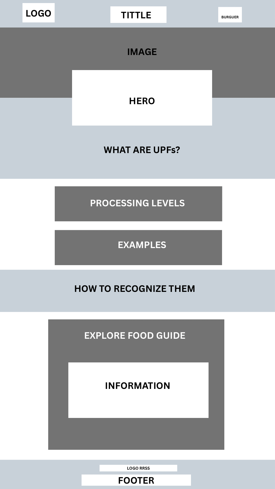
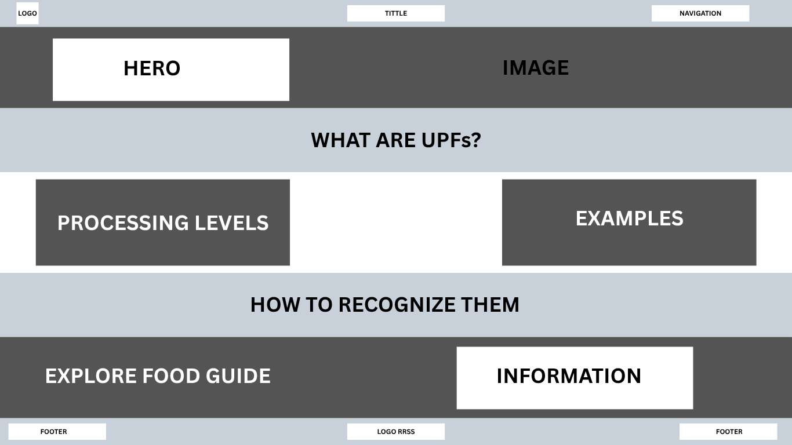

Site Name
Understanding Ultra-Processed Foods
The name "Understanding Ultra-Processed Foods" was selected because it clearly describes the main purpose of the website. The site is designed to help visitors learn what ultra-processed foods are, how to recognize them, and how to better understand food labels.
Site Purpose
The purpose of this website is to provide simple and educational information about ultra-processed foods. The website will explain different levels of food processing, provide common examples, and describe general characteristics that can help visitors recognize highly processed products.
The website will also include an interactive Food Guide where visitors can explore different food products, categories, processing levels, ingredients, and descriptions. Another section will provide information about reading food labels, understanding ingredients, and comparing similar products.
The goal is to make information about ultra-processed foods easier to understand and explore through a combination of educational content and interactive features.
Scenarios
- How can I tell if a food is ultra-processed?
- What should I look for when reading a food label?
- How can I compare two similar food products?
- What are some common examples of ultra-processed foods?
Color Scheme
The website will use a simple color palette inspired by natural foods and a clean educational design.
Dark Green
#2F5D50
Used for main headings, navigation elements, and important sections.
Cream
#F7F3E8
Used as the main background color to create a soft, comfortable reading environment.
Orange
#E58F3A
Used for buttons, links, highlights, and interactive elements.
Typography
Poppins
Poppins will be used for headings, navigation labels, buttons, and important titles. Its modern and rounded appearance will help make the website feel friendly and approachable.
Open Sans
Open Sans will be used for paragraphs, descriptions, labels, and other body text. It provides good readability for longer sections of information.
Website Pages
Home – Understanding Ultra-Processed Foods
The Home page will introduce the topic and provide basic information about food processing.
- Introduction: Explain what ultra-processed foods are and the purpose of the website.
- Food Processing Levels: Explain the differences between minimally processed, processed, and ultra-processed foods.
- Common Examples: Introduce examples such as packaged snacks, soft drinks, breakfast cereals, instant noodles, and processed meats.
- How to Recognize Them: Explain general characteristics that can help visitors identify highly processed products.
- Explore the Guide: Provide a link or button to the Food Guide page.
Food Guide
The Food Guide will be the main interactive page of the website. It will contain information about at least 15 food products loaded from a JSON file using JavaScript.
- Food Catalog: Display food products with their name, category, processing level, main ingredients, and description.
- Food Categories: Allow visitors to filter foods by categories such as breakfast, snacks, beverages, desserts, and ready-to-eat meals.
- Food Details: Each food item will have a button that opens a modal with additional information.
- Favorites: Visitors will be able to save food items as favorites using local storage.
The page will use JavaScript features including the Fetch API, JSON, async/await, try/catch, array methods, template literals, DOM manipulation, event listeners, modal dialogs, local storage, and ES modules.
Smart Food Choices
The Smart Food Choices page will provide general educational information about understanding food labels and comparing products.
- Reading Food Labels: Explain ingredients, serving information, and nutrition information.
- Understanding Ingredients: Explain how ingredients are listed and introduce common ingredients found in highly processed products.
- Comparing Products: Explain how visitors can compare similar food products by examining ingredients, serving information, and other package information.
- Everyday Strategies: Provide simple ideas for becoming more aware of the foods people purchase and consume.
- Contact Form: Allow visitors to submit their name, email, and questions or comments about the website.
References
A separate References page will provide the sources used for images, written information, and other external content. The page will be accessible through a link in the website footer.
Main Website Goal
The overall goal of the website is to make information about ultra-processed foods easy to understand and explore. The site will combine educational content with interactive features to create a useful and engaging experience for visitors.
Wireframes
The wireframes will show the structure and layout of the Home page for both small and large viewports. They will be created as black and white sketches focusing on page structure, functionality, and responsive layout.
Small Viewport

Large Viewport
